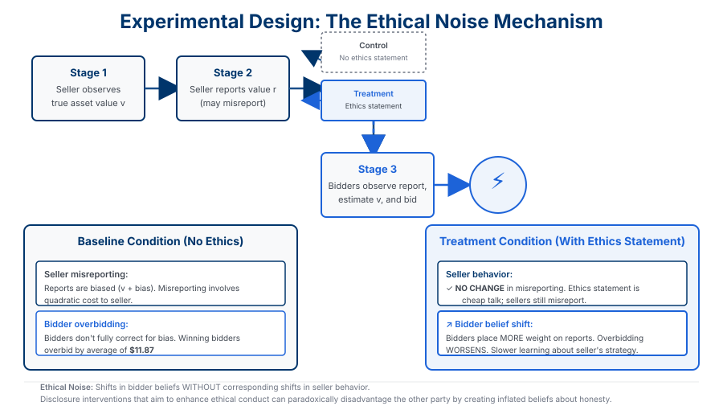

Abstract
We study how ethical declarations shape market behavior in a laboratory setting. A privately informed seller observes an asset value and issues a report before a first-price auction. Bidders see the report and submit bids. Misreporting is costly to the seller (quadratic in the bias). In one treatment, sellers must sign an ethical statement that the report is truthful before trading; refusal ends the round with no trade. The design is pre-registered; roles rotate and matching is random.
Signing an ethical statement does not meaningfully reduce sellers’ misreporting. It shifts beliefs: bidders place more weight on reports and bid more aggressively, moving surplus toward sellers. Bidders do not fully undo reporting bias and, when the ethical statement is present, learn more slowly about the seller’s strategic behavior. Using a structural model of heterogeneous lying costs, we show that markets would be more price-efficient if bidders rationally internalized the distribution of lying costs. Disclosure interventions aimed at enhancing ethical conduct need not reduce bias and can disadvantage bidders. We introduce "ethical noise": shifts in beliefs without corresponding shifts in behavior that distort market outcomes.
Key Findings
No Meaningful Change in Seller Behavior
Requiring sellers to sign an ethical statement does not meaningfully reduce misreporting. Seller reporting behavior is similar with or without the intervention. The statement is effectively cheap talk in the experiment.
Belief Shifts and Surplus
When the ethical statement is present, bidders place more weight on reports and bid more aggressively. Surplus moves toward sellers. So the intervention changes bidders’ beliefs and the terms of trade, not sellers’ conduct.
Bidders Don’t Fully Undo Bias; Slower Learning
Bidders do not fully correct for reporting bias. In the baseline, winning bidders overbid by an average of $11.87. When the ethical statement is present, bidders learn more slowly about the seller’s strategic behavior. Disproportionately, auction winners are bidders who assumed the seller was honest.
Ethical Noise
We define "ethical noise" as shifts in beliefs without corresponding shifts in behavior that distort market outcomes. Disclosure interventions aimed at enhancing ethical conduct need not reduce bias and can disadvantage bidders. A structural counterfactual suggests markets would be more price-efficient if bidders rationally internalized the distribution of lying costs.
Figures
The figures below visualize the experimental results and mechanism. Figure 1 shows the key treatment effects on seller misreporting, bidder overbidding, and bidder learning. Figure 2 illustrates the experimental design and how ethical declarations create "ethical noise" in market outcomes.
Figure 1: Key Results and Treatment Effects

Left: Seller misreporting shows no significant change across treatments. Middle & Right: Bidder overbidding worsens with ethics statement; learning slows. Baseline overbidding: $11.87 per winning bid.
Figure 2: Experimental Design and Ethical Noise Mechanism

Top: Four-stage experimental flow from seller observation through first-price auction. Bottom: Comparison of control (no ethics) vs. treatment (ethics statement required) conditions. The key finding: ethical statements don’t change seller behavior but shift bidder beliefs upward, creating "ethical noise" that disadvantages bidders.
Research Contribution
We provide laboratory evidence on how ethical declarations affect a canonical misreporting setting: a seller reports, then bidders compete in a first-price auction. The intervention (mandatory ethical statement) does not improve reporting; it shifts bidders’ beliefs and worsens outcomes for them. That is the "ethical noise" mechanism. The result is relevant for disclosure policy: interventions aimed at enhancing ethical conduct need not reduce bias and can disadvantage counterparties who place too much weight on the declaration.
We estimate a structural model of heterogeneous lying costs and show that price efficiency would be higher if bidders rationally internalized the distribution of seller types. The design is pre-registered (Open Science Framework). The paper speaks to the gap between rational-expectations benchmarks, where biased reports are fully undone, and actual inference in markets with heterogeneous ethics.